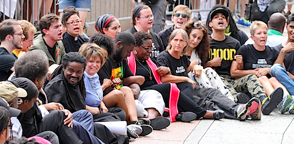
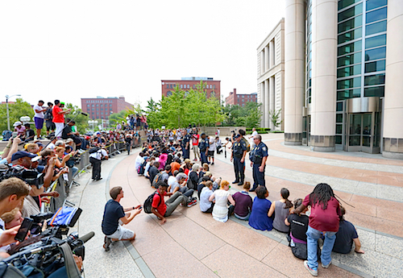
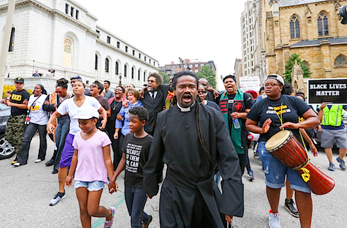

Friends,
This past weekend, we had the honor of participating in mass civil disobedience across the St. Louis area as part of the "United We Fight" weekend. Despite the arrests of more than 200 nonviolent demonstrators -- including FOR Executive Director Rev. Kristin Stoneking and FOR Bayard Rustin Fellow Rev. Osagyefo Sekou -- the year-long resistance sparked by the murder of Michael Brown Jr. remains alive and well.
FOR has been on the ground in and around Ferguson, helping to support and amplify the critical work of communities of color and allies in fighting police violence, mass incarceration, and institutionalized racism.
|

Dr. Cornel West and Rev. Sekou defy orders to withdraw and instead climb the barricade to the federal justice building. Share this photo on Facebook.
|
On Monday, 57 people were arrested as part of peaceful civil disobedience at the Thomas F. Eagleton U.S. Courthouse, where community leaders, activists, organizers and clergy demanded that U.S. Attorney Richard Callahan do his job and take immediate action on the findings of the scathing Department of Justice reports.
"The Department of Justice reports merely confirmed what the local community knows all too well, but the almost complete lack of action on the multitude of well-documented state abuses is just one more betrayal of the people of St. Louis and the black and brown community nationwide," said Rev. Sekou.
The hundreds of marchers, encompassing interfaith leaders, seminarians, activists and congregants from the St. Louis area and nationwide filled the streets, rallying at the courthouse for several hours as city and federal police gave warnings of the imminent use of chemical agents and other compliance measures.
When clergy and activists breached the barricades and sat in front of the building, the nearly-sixty taking part were slowly arrested as St. Louis police arrived in the dozens, and heavily-armed federal police agents carrying automatic weapons surrounded the small group of peaceful protestors. Police also threatened journalists, arresting at least two reporters at the protest.
The arrestees were held in federal holding cells on the premises, charged with a federal misdemeanor of "Obstructing the Usual use of Entrances," had DNA and other biometric information taken and were released over the following nine hours. They have since been released, but still face significant legal costs. We encourage you to make a donation to the legal support fund if you are able.
"The people of Ferguson have never waited for an unjust state to uphold their rights or freedoms, they have taken their struggle to the streets to demand them. As iconic civil rights leader and FOR staff member Bayard Rustin said in 1947, 'Unjust social laws and patterns do not change because Supreme Courts deliver just decisions. … Social progress comes from struggle; all freedom demands a price,'" said Rev. Sekou.
"However, to see the Civil Rights Division of the Department of Justice fail so miserably in everything from repeated requests for the Ferguson police department to wear their official ID as mandated by law to any concrete action to curb the abuses still going on every day is a further blow against democracy," he said.

"The Department of Justice reports detail the many practices of the Ferguson police that violate the First, Fourth and Fourteenth Amendments of the Constitution," Rev. Stoneking added. "Despite national and international condemnation, damning court decisions, injunctions and, increasingly, civil awards being made to those wrongfully arrested or assaulted during the brutal police response last year, the Ferguson police department still exists and the evidence points to an actual increase in police abuses in recent months.
"In these situations, the federal government must act to ensure justice is actually done. The systems of justice in Ferguson have shown themselves unable and unwilling to do their jobs. As members of many spiritual traditions and people of conscience it is our moral responsibility to use all nonviolent means at our disposal, including our bodies, to call for the transformation of systems of suffering and injustice," she said.
Rev. Stoneking also wrote a personal account of her arrest in St. Louis, and why she thinks this movement is so critical for the Fellowship of Reconciliation.
We want to hear from you, too. How have you been working in your community around these issues? Reply to this email and let us know -- we'd love to share your work with our wider network!
In peace,
 Gretchen Honnold Gretchen Honnold
Training Coordinator
Fellowship of Reconciliation
 Ethan Vesely-Flad Ethan Vesely-Flad
Director of National Organizing
Fellowship of Reconciliation
P.S. We were truly inspired by the bravery of organizers this weekend -- but many of them are facing daunting legal fees as a result of their work. Please donate to the legal support fund. Thank you!

All photos copyright Heather Wilson. Used with permission. |